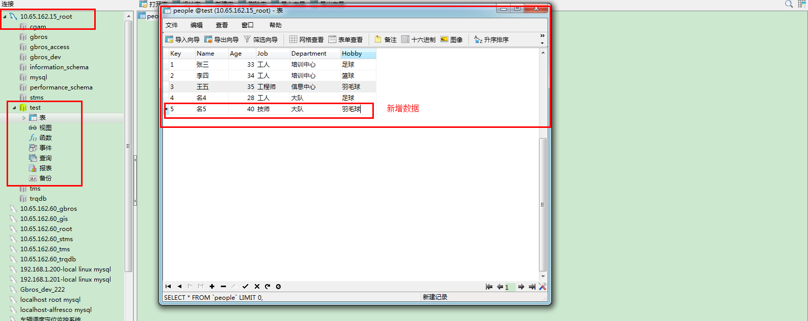

Mysql 主备库设置
举例说明主备库设置：
15服务器MYSQL（主）——60服务器MYSQL（备）设置
本次复制配置以：10.65.162.15（主库），10.65.162.60（备库）；
第一步：创建复制账号
在主库和备库都创建此账号：
GRANT Replication SLAVE,replication client on . to repl@'10.65.162.15' IDENTIFIED by 'p4ssword'; GRANT Replication SLAVE,replication client on . to repl@'10.65.162.60' IDENTIFIED by 'p4ssword';
第二步：配置主库的二进制文件日志
配置mysql安装目录下：my.ini
log_bin = mysql-bin
server_id = 15 这是我ip的后三位
配置完后，一般需要重启数据库，通过：show master status;查看日志状态
第三步：配置备库的二进制文件日志
配置mysql安装目录下：my.ini
#Config Slave db
log_bin = mysql-bin
server_id = 60
relay_log = C:\\Program Files\\MySQL\\MySQL Server 5.5\\relay_log\\mysql-relay-bin
log_slave_updates = 1
read_only = 1
配置完后，一般需要重启数据库，通过：show master status;查看日志状态
第四步：启动复制（备库）：
（1）下面是开始复制的基本命令：
mysql>CHANGE MASTER TO MASTER_HOST='10.65.162.15', MASTER_USER='repl', MASTER_PASSWORD='p4ssword', MASTER_LOG_FILE='mysql-bin.000001', MASTER_LOG_POS=0;
若启动错误，一般需要执行Reset slave;
(2)、show slave status;
(3)、start slave;
(4)、show slave status;
第五步：效果图
第一步：

第二步： 
第三步：